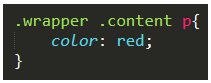

Você deve ter notado que no HTML, alguns elementos ficam “dentro de outros”, como no exemplo:
Todo elemento que está por dentro de outro é chamado de “child” (criança) do elemento exterior, este chamado de “parent” (pai).
Vamos supor que precisamos selecionar a tag p somente dentro dos elementos com class “content”. Faríamos assim – separados por um espaço, sem a vírgula:
Se quiséssemos selecionar o p dentro do wrapper, ficaria da mesma forma:
Também podemos selecionar usando todas as “camadas”, que aumenta a especificidade da seleção (veremos mais sobre isso em breve):
